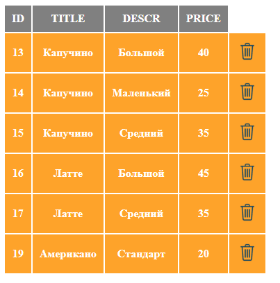
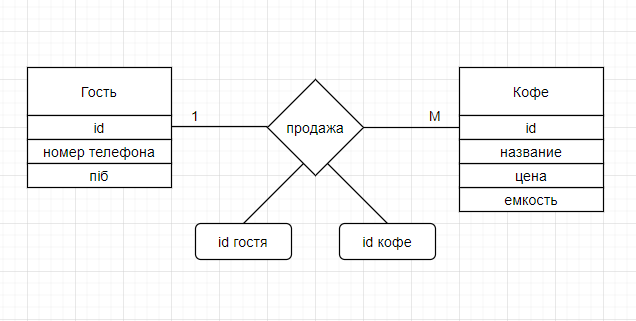
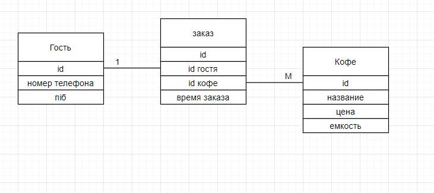

ЗВІТИ З ЛАБОРАТОРНИХ РОБІТ З ДИСЦИПЛІНИ « РОЗРОБЛЕННЯ WEB-ЗАСТОСУВАННЬ»
студент групи IA-94 Ракша Ярослав Дмитрович та Ангеловський Ярослав Юрийович
Переменная отношения находится в первой нормальной форме тогда и только тогда,
когда в любом допустимом значении этой переменной каждый кортеж
отношения содержит только одно значение для каждого из атрибутов
Отношение находится в первой нормальной форме (сокращённо 1НФ), если все его атрибуты атомарны,
то есть если ни один из его атрибутов нельзя разделить на более простые атрибуты,
которые соответствуют каким-то другим свойствам описываемой сущности.

Приведем эту таблицу ко 2НФ
ER-ДІАГРАМА

ДАТАЛОГІЧНА МОДЕЛЬ
